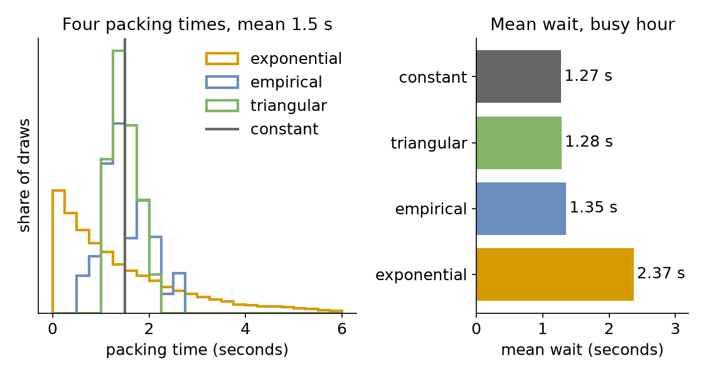

Choosing Inputs
Packing takes 1.5 seconds on average. So far the shop has said exactly that: a constant 1.5 seconds. Real packing times vary, and a model is only as good as the times it draws. This page asks: which distribution fits packing times?
What You Add
A packing time chosen from evidence. The shop is the busy hour with 3 packers from Queues and Capacity. It gets four candidates for packing, all with a mean of 1.5 seconds, and runs the hour with each:
constant: the mean alone, as the shop had it;exponential: the usual choice when nothing is known;triangular: an expert's estimate;empirical: times measured at the packing bench.
An Expert's Range
Choosing a distribution for an input is called input modelling. Often there is no data yet, but someone who knows the work can say how long it takes at least, usually and at most. A triangular distribution takes exactly those three numbers, low, mode and high, and all three are required:
Its mean is (low + mode + high) ÷ 3 = (1 + 1.25 + 2.25) ÷ 3 = 1.5 seconds. In a blueprint every time-valued parameter takes a duration such as 1.25 s or 2 min; a plain number is seconds.
Measured Times
When times can be measured, use them. An empirical distribution draws from a list of measured values, each equally likely (or with weights, one per value). These are 40 packing times timed at the bench, with a mean of 1.5 seconds:
# 40 packing times measured at the bench, in seconds
empirical:
dist: empirical
values: [1.5, 2.5, 2.4, 1.2, 1.3, 1.2, 1.8, 1.4, 2.0, 0.7,
2.7, 1.4, 1.9, 1.4, 1.3, 1.8, 2.0, 1.4, 1.4, 1.9,
1.1, 0.8, 1.7, 1.1, 0.7, 1.1, 1.2, 0.9, 0.8, 1.5,
2.1, 1.3, 1.1, 1.7, 1.9, 1.3, 1.8, 2.2, 1.4, 1.1]
# 40 packing times measured at the bench, in seconds
measured = [
1.5, 2.5, 2.4, 1.2, 1.3, 1.2, 1.8, 1.4, 2.0, 0.7,
2.7, 1.4, 1.9, 1.4, 1.3, 1.8, 2.0, 1.4, 1.4, 1.9,
1.1, 0.8, 1.7, 1.1, 0.7, 1.1, 1.2, 0.9, 0.8, 1.5,
2.1, 1.3, 1.1, 1.7, 1.9, 1.3, 1.8, 2.2, 1.4, 1.1,
] # fmt: skip
app.add_service("empirical", dist="empirical", values=measured)
# 40 packing times measured at the bench, in seconds
MEASURED = [
1.5, 2.5, 2.4, 1.2, 1.3, 1.2, 1.8, 1.4, 2.0, 0.7,
2.7, 1.4, 1.9, 1.4, 1.3, 1.8, 2.0, 1.4, 1.4, 1.9,
1.1, 0.8, 1.7, 1.1, 0.7, 1.1, 1.2, 0.9, 0.8, 1.5,
2.1, 1.3, 1.1, 1.7, 1.9, 1.3, 1.8, 2.2, 1.4, 1.1,
] # fmt: skip
EMPIRICAL = DistributionConfig(dist="empirical", values=MEASURED)
The values are taken when the model is loaded. A list is not one number, so an empirical distribution has no registry path and does not change while the run goes on; the other distributions have one path per parameter, such as Shop.service.triangular.mode.
Same Mean, Different Waits
All four candidates have the same mean, so the packers are equally busy with each: utilisation 0.9. Run the hour with each, and read the mean wait from the statistics at the typical level, which Measuring a Run explains:
tasks:
pack_order:
# The candidate comes from the PACKING variable, empirical when it is not set
service: ${PACKING:-empirical}
resource: packers
payload: {event_type: order_packed}
# The mean wait of pack_order, published at the end
stats: {level: typical, interval: 1 h}
def pack_order(env, sampler, packers, packing, task_id):
"""One order, packed with the candidate called `packing`."""
env.stats.task_queued("pack_order", task_id)
with packers.request() as request:
yield request
env.stats.task_started("pack_order", task_id)
service = env.registry.get_config(f"Shop.service.{packing}")
yield env.timeout(sampler.sample(service))
env.stats.task_finished("pack_order", task_id)
The Builder and Low-level scripts print one line per candidate; the YAML runs print the same numbers as the value of their wait_mean lines:
constant mean wait 1.27 s
triangular mean wait 1.28 s
empirical mean wait 1.35 s
exponential mean wait 2.37 s
A mean alone hides queues. With constant packing nobody holds a packer for long. With exponential packing a few orders take 4, 5 or 6 seconds, and everyone behind them waits: the mean wait almost doubles at the same utilisation.
Result
Which distribution fits packing times? The empirical distribution, because it is the measured times themselves. On the left, the shapes of the four candidates; on the right, the mean wait each gives in the busy hour:

With the empirical distribution the mean wait is 1.35 seconds. The constant mean gives 1.27 seconds, 6% too short, and the exponential guess gives 2.37 seconds, 75% too long. The expert's triangle is close to the constant, because its range is narrower than the measured one.
Why It Works
In the busy hour the mean wait is roughly proportional to the square of the spread of the gaps between orders plus the square of the spread of the packing times, each spread measured relative to its mean (Kingman's approximation). The gaps are the same in all four runs, so only the packing spread differs: none for constant, a little for triangular, more for the measured times, and as much as the mean itself for exponential. A family fitted to the measured times, such as a gamma with their mean and standard deviation, takes other parameters, a shape and a scale; Arrivals and Services gives the formulas that turn a mean and a standard deviation into them, and lists each distribution with its parameters and rules. Distributions gives the mean and variance of each family.
Full Files
Full files
# The Choosing Inputs tutorial: the busy hour with four candidate packing times.
# Run it once per candidate, and read the mean wait from the last lines:
# PACKING=empirical desflow run choosing_inputs.yaml 2>&1 | grep wait_mean
simulation:
sim_id: Shop
factor: 0
random_seed: 42
resources:
packers: {current_cap: 3, max_cap: 10}
arrivals:
orders: {dist: exponential, rate: 1.8, spawn: pack_order}
services:
# Four candidates for packing, each with a mean of 1.5 seconds
constant: {dist: constant, value: 1.5 s}
exponential: {dist: exponential, rate: 0.6667} # 1 / 1.5 s
# An expert's estimate: at least 1 s, usually 1.25 s, at most 2.25 s
triangular: {dist: triangular, low: 1 s, mode: 1.25 s, high: 2.25 s}
# 40 packing times measured at the bench, in seconds
empirical:
dist: empirical
values: [1.5, 2.5, 2.4, 1.2, 1.3, 1.2, 1.8, 1.4, 2.0, 0.7,
2.7, 1.4, 1.9, 1.4, 1.3, 1.8, 2.0, 1.4, 1.4, 1.9,
1.1, 0.8, 1.7, 1.1, 0.7, 1.1, 1.2, 0.9, 0.8, 1.5,
2.1, 1.3, 1.1, 1.7, 1.9, 1.3, 1.8, 2.2, 1.4, 1.1]
tasks:
pack_order:
# The candidate comes from the PACKING variable, empirical when it is not set
service: ${PACKING:-empirical}
resource: packers
payload: {event_type: order_packed}
# The mean wait of pack_order, published at the end
stats: {level: typical, interval: 1 h}
egress:
- type: Console
run:
until: 1 h
"""The Choosing Inputs tutorial: the busy hour with four candidate packing times.
Each candidate has a mean of 1.5 seconds. The script runs the busy hour once per
candidate, unpaced, and prints the mean wait of each run.
"""
from desflow import SimulationContext
CANDIDATES = ["constant", "triangular", "empirical", "exponential"]
def shop(packing: str) -> SimulationContext:
"""The busy hour with 3 packers, packing with the service called `packing`."""
app = (
SimulationContext(sim_id="Shop", factor=0, random_seed=42)
.add_resource("packers", current_cap=3, max_cap=10)
.add_arrival("orders", dist="exponential", rate=1.8)
# Four candidates for packing, each with a mean of 1.5 seconds
.add_service("constant", dist="constant", value=1.5)
.add_service("exponential", dist="exponential", rate=0.6667) # 1 / 1.5 s
)
# An expert's estimate: at least 1 s, usually 1.25 s, at most 2.25 s
app.add_service("triangular", dist="triangular", low=1, mode=1.25, high=2.25)
# 40 packing times measured at the bench, in seconds
measured = [
1.5, 2.5, 2.4, 1.2, 1.3, 1.2, 1.8, 1.4, 2.0, 0.7,
2.7, 1.4, 1.9, 1.4, 1.3, 1.8, 2.0, 1.4, 1.4, 1.9,
1.1, 0.8, 1.7, 1.1, 0.7, 1.1, 1.2, 0.9, 0.8, 1.5,
2.1, 1.3, 1.1, 1.7, 1.9, 1.3, 1.8, 2.2, 1.4, 1.1,
] # fmt: skip
app.add_service("empirical", dist="empirical", values=measured)
# The task packs with the candidate; the mean wait is read at the end
@app.task(service_id=packing, resource_id="packers")
def pack_order(task_id):
return {"event_type": "order_packed"}
app.with_stats("typical", interval=3600)
@app.arrival_loop("orders")
def order_generator(context):
task_id = 0
while True:
order = yield context.wait_for_arrival("orders")
context.spawn(pack_order(task_id, entity=order))
task_id += 1
return app
def mean_wait(packing: str) -> float:
"""Runs the busy hour with one candidate and returns the mean wait."""
app = shop(packing)
app.run(until="1 h")
return app.env.stats.readings()["Shop.stats.tasks.pack_order.wait_mean"]
if __name__ == "__main__":
for packing in CANDIDATES:
print(f"{packing:<12} mean wait {mean_wait(packing):5.2f} s")
"""The Choosing Inputs tutorial: the busy hour with four candidate packing times.
Each candidate has a mean of 1.5 seconds. The script runs the busy hour once per
candidate, unpaced, and prints the mean wait of each run.
"""
from desflow import (
CapacityConfig,
DistributionConfig,
DynamicRealtimeEnvironment,
DynamicResource,
Sampler,
SimParameter,
)
CANDIDATES = ["constant", "triangular", "empirical", "exponential"]
# An expert's estimate: at least 1 s, usually 1.25 s, at most 2.25 s
TRIANGULAR = DistributionConfig(dist="triangular", low=1, mode=1.25, high=2.25)
# 40 packing times measured at the bench, in seconds
MEASURED = [
1.5, 2.5, 2.4, 1.2, 1.3, 1.2, 1.8, 1.4, 2.0, 0.7,
2.7, 1.4, 1.9, 1.4, 1.3, 1.8, 2.0, 1.4, 1.4, 1.9,
1.1, 0.8, 1.7, 1.1, 0.7, 1.1, 1.2, 0.9, 0.8, 1.5,
2.1, 1.3, 1.1, 1.7, 1.9, 1.3, 1.8, 2.2, 1.4, 1.1,
] # fmt: skip
EMPIRICAL = DistributionConfig(dist="empirical", values=MEASURED)
def params() -> SimParameter:
"""The busy hour with 3 packers and the four candidates."""
return SimParameter(
sim_id="Shop",
arrival={"orders": DistributionConfig(dist="exponential", rate=1.8)},
# Four candidates for packing, each with a mean of 1.5 seconds
service={
"constant": DistributionConfig(dist="constant", value=1.5),
"exponential": DistributionConfig(dist="exponential", rate=0.6667),
"triangular": TRIANGULAR,
"empirical": EMPIRICAL,
},
resources={"packers": CapacityConfig(current_cap=3, max_cap=10)},
)
def pack_order(env, sampler, packers, packing, task_id):
"""One order, packed with the candidate called `packing`."""
env.stats.task_queued("pack_order", task_id)
with packers.request() as request:
yield request
env.stats.task_started("pack_order", task_id)
service = env.registry.get_config(f"Shop.service.{packing}")
yield env.timeout(sampler.sample(service))
env.stats.task_finished("pack_order", task_id)
def order_generator(env, sampler, packers, packing):
arrival = env.registry.get_config("Shop.arrival.orders")
task_id = 0
while True:
yield env.timeout(sampler.sample(arrival))
env.process(pack_order(env, sampler, packers, packing, task_id))
task_id += 1
def mean_wait(packing: str) -> float:
"""Runs the busy hour with one candidate and returns the mean wait."""
env = DynamicRealtimeEnvironment(factor=0)
env.registry.register_sim_parameter(params())
env.setup_stats("Shop", "typical", interval=3600)
packers = DynamicResource(env, "Shop", "packers")
env.process(order_generator(env, Sampler(seed=42), packers, packing))
try:
env.run(until=3600)
finally:
env.teardown()
return env.stats.readings()["Shop.stats.tasks.pack_order.wait_mean"]
if __name__ == "__main__":
for packing in CANDIDATES:
print(f"{packing:<12} mean wait {mean_wait(packing):5.2f} s")
Next, Measuring a Run asks what else a run can tell you.